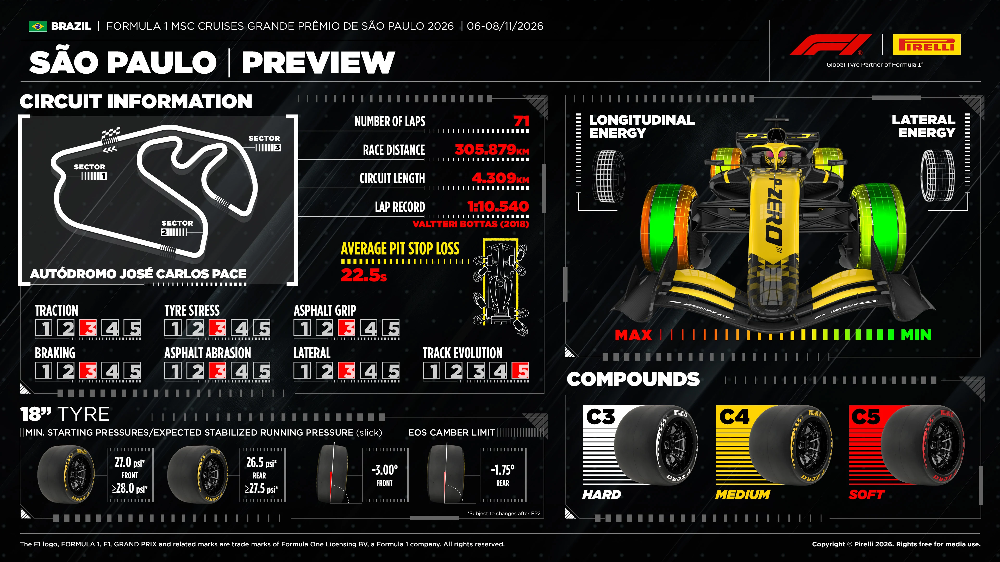
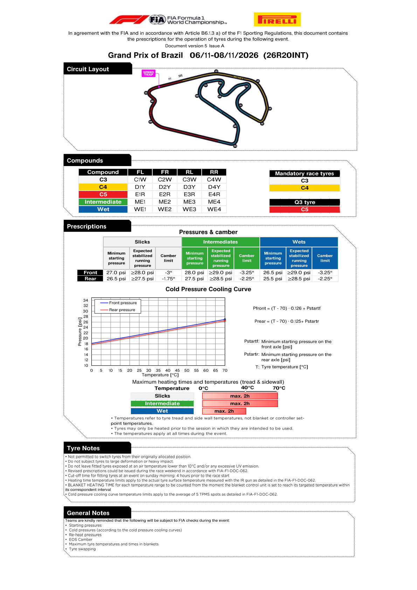

Tyres & Strategy
Compound allocation, degradation and the strategic shape of the race.
Race tyre availability
No verified pre-race set inventory has been collected for this weekend. These charts normally appear after qualifying, not with the earlier compound nomination. A missing chart is not proof of non-publication, and no zero counts or FastF1-derived inventory are substituted.
Source discovery checked 2026-11-07T12:33:09+00:00.
FIA official tyre documents
Official source; curated transcription may await review. Linked PDFs are the authority. Discovery does not extract or verify numeric values, and does not replace the curated material below.
Last successful FIA document discovery: 2026-11-07T12:32:06.095148+00:00. This is retrieval time, not issue time; newer revisions may exist.
What this circuit does to a tyre
Anti-clockwise loading stresses the right-hand tyres and the neck. Sections between Turns 3–5 and Turns 8–9 were resurfaced in 2026. Pirelli rates track evolution 5/5; practice must establish degradation on the new surface.
Why it matters here
Very good. A long uphill straight into a downhill braking zone, plus several secondary opportunities. Interlagos reliably produces genuine racing.
Where passing is hard, strategy and the undercut decide the race; where it is easy, teams can afford to run longer and recover track position on merit.
Pirelli's event preview

FIA tyre prescriptions
C3 Hard / C4 Medium / C5 Soft. Mandatory race specifications: C3/C4; Q3 tyre: C5. These are nominations, not remaining race-set counts. The initial weekend allocation is two hard, three medium and eight soft sets per driver; post-qualifying availability must be sourced separately.
| Type | Axle | Minimum start (psi) | Expected stabilized (psi) | Camber limit |
|---|---|---|---|---|
| Slick | Front | 27.0 | ≥28.0 | −3.00° |
| Slick | Rear | 26.5 | ≥27.5 | −1.75° |
| Intermediate | Front | 28.0 | ≥29.0 | −3.25° |
| Intermediate | Rear | 27.5 | ≥28.5 | −2.25° |
| Wet | Front | 26.5 | ≥29.0 | −3.25° |
| Wet | Rear | 25.5 | ≥28.5 | −2.25° |
Maximum heating: two hours, 70°C slick/intermediate and 40°C wet, measured at tread and sidewall rather than the blanket controller. Cold-pressure curves: front (T−70)×0.126+Pstart; rear (T−70)×0.125+Pstart. The latest successful FIA document discovery at 10:08 UTC contained no later Pirelli prescription.
Pirelli's full poster estimates 22.5 seconds pit-stop loss. Traction, braking, stress, abrasion, grip and lateral demand are all 3/5; track evolution is 5/5. Resurfacing between Turns 3–5 and 8–9 makes Friday's long runs important. Last year's effective two-stop race is historical context, not a verified 2026 strategy window.
